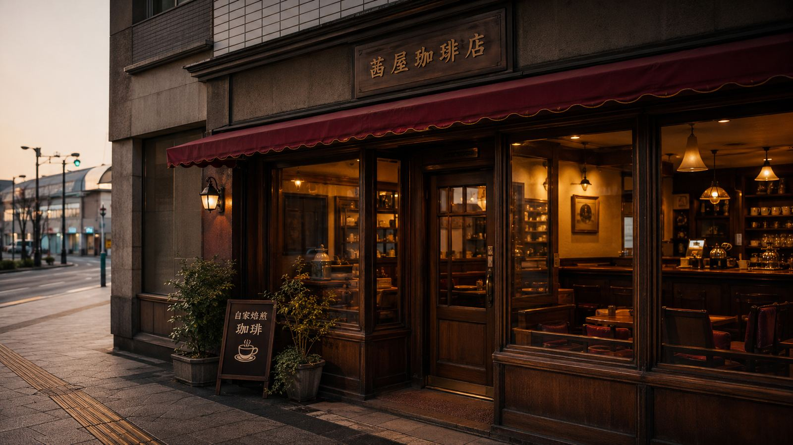
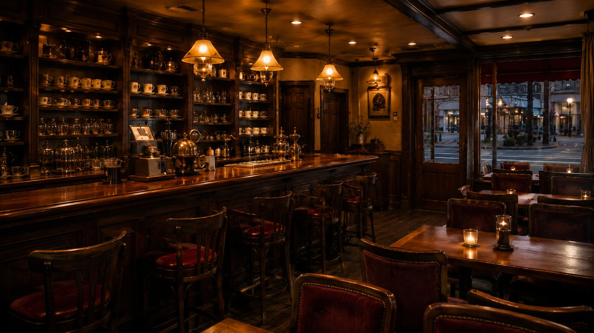
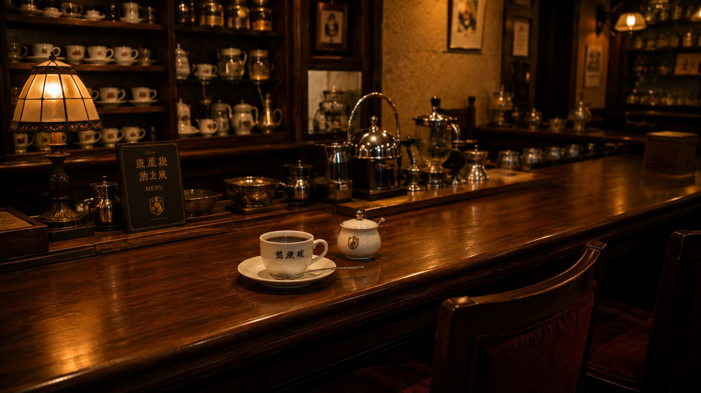
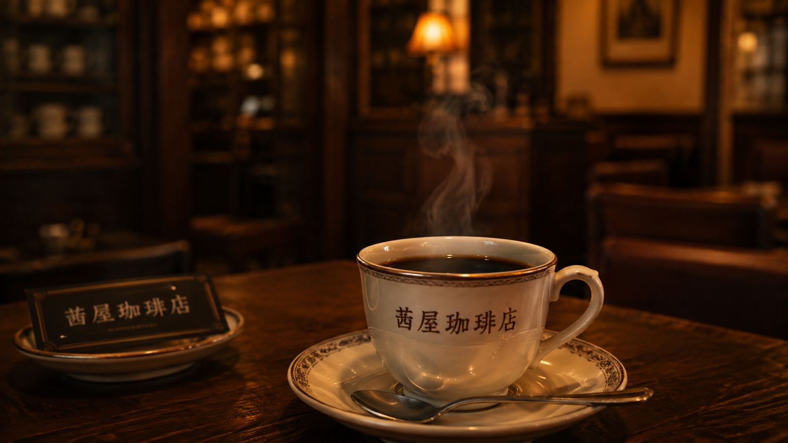
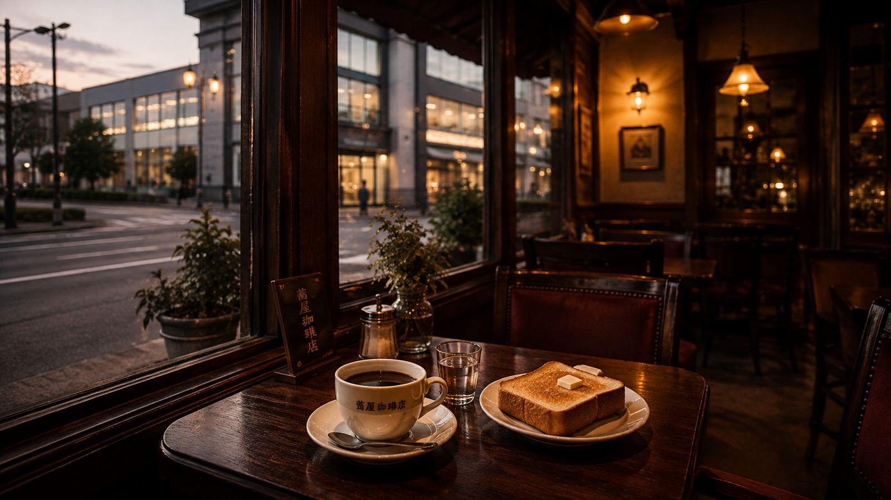

地域とのつながり
秋田駅前で続いてきた時間
創業者や開業当時の経緯について、信頼できる公開情報は確認できていません。ただし、少なくとも2007年には店舗の記録が残っており、秋田駅前で長く営業を続けてきた喫茶店であることが分かっています。
駅前という場所柄、通勤・通学の合間や旅先の一息に、これまで多くの時間がこの店内で流れてきたと考えられます。

イメージ画像
立地
秋田駅西口から徒歩約3分の場所にあります。
待ち合わせの前後や、外出のついでにも立ち寄りやすい距離です。

イメージ画像
空間
クラシックで落ち着いた、昔ながらの喫茶店らしい店内です。
せわしない一日の中でも、ゆったりとした時間の流れを感じられます。

イメージ画像
客席
カウンター席とテーブル席の両方があります。
おひとり様でもコーヒーをゆっくり楽しみやすい造りです。
創業者や開業当時の経緯について、信頼できる公開情報は確認できていません。ただし、少なくとも2007年には店舗の記録が残っており、秋田駅前で長く営業を続けてきた喫茶店であることが分かっています。
駅前という場所柄、通勤・通学の合間や旅先の一息に、これまで多くの時間がこの店内で流れてきたと考えられます。

イメージ画像
一押し商品茜屋ぶれんどコーヒー
利用者から店舗を代表するコーヒーとして紹介されており、丁寧にペーパードリップで淹れるスタイルが言及されています。
イメージ画像
01
カウンター席で、丁寧に淹れられた一杯とともに静かなひとときを。
イメージ画像
02
テーブル席では、友人や家族と落ち着いて話しながら過ごせます。

イメージ画像
03
駅から徒歩約3分という立地を生かし、外出の合間に立ち寄る一杯にも。
5つの質問から、その日の気分に合う茜屋珈琲店での過ごし方をご案内する試作デモです。店舗運営者の方が、新しいお客様案内サービスの導入イメージをつかむための試作として制作しました。
対象：お店選びに迷っている方／これから来店を検討している方
解決したい課題：どんな過ごし方が自分に合うか、来店前にイメージしにくいこと
質問 1 / 5
カウンターでひとり時間を楽しむタイプ
誰にも気兼ねなく、自分のペースで一杯を味わいたい方に近い結果です。ひとりでの利用や、じっくり過ごせる時間帯を選んでいたことから、このタイプになりました。
テーブル席で会話を楽しむタイプ
誰かと一緒に過ごす時間を大切にしたい方に近い結果です。友人や家族との利用や、テーブル席を選んでいたことから、このタイプになりました。
さくっと一息つきたいタイプ
短い時間でも気軽に立ち寄りたい方に近い結果です。短時間の利用や、到着してすぐの一杯を選んでいたことから、このタイプになりました。
読書や作業の合間に一息つきたいタイプ
静かな時間に集中したい方に近い結果です。集中したい時間や、ひとりでの利用を選んでいたことから、このタイプになりました。
忙しくて店内滞在が難しいタイプ
ゆっくり店内で過ごす時間が取りにくい方に近い結果です。店に行く時間が少ない、または持ち帰りを検討する回答から、このタイプになりました。
住所・電話番号・営業時間・定休日などの詳細情報は、確認できた公開情報がないため掲載しておりません。来店前は店舗へ直接ご確認ください。